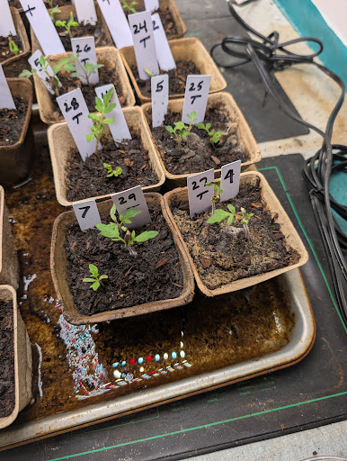

Option A: Canvas Inspector
Precision-first: draw/select on image, edit selected pot in side panel.
Open Option AUI-only wireframes to compare interaction models before implementation.
Precision-first: draw/select on image, edit selected pot in side panel.
Open Option A
Task-driven sequence: explicit steps + filmstrip progression.
Open Option B
Speed-first queue scan with sticky editor for high-throughput review.
Open Option C
Chronology-first review that starts from day-level context, then edits one focal image.
Open Option D
Pot-centric status lanes to clear high-risk rows first, with quick side edits.
Open Option E
Two-frame verification mode for confirming whether images represent the same pot.
Open Option F